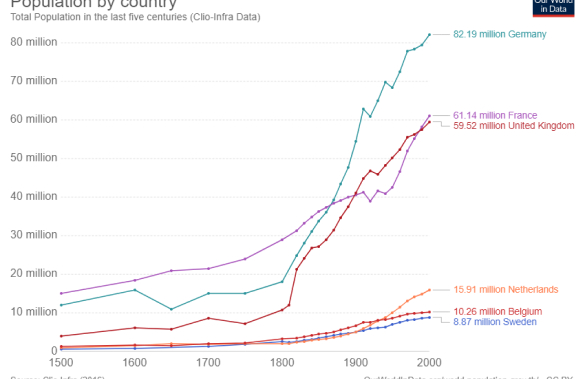

From smart land-use to sustainable communities
- 835
- 29
- 12 min to read
Issue
In 2010 Schiedam seized the opportunity to use the roof of a 2.5 km motorway tunnel to relocate sports facilities and redevelop their former sites. Schiedam was «unlocked» in close cooperation with citizen groups and sports clubs, as well as private companies, to ensure the feasibility of plans produced in the participative process. It also minimised public financial risks and was combined with a smart procurement strategy and room for private initiatives.
This programme supports social cohesion and inclusion by developing new multifunctional sports facilities while adding 640 sustainable dwellings to facilitate local housing for citizens.

Schiedam
The city is known for its historical center with canals, and for having the tallest windmills in the world. Schiedam is also well known for the distilleries and malthouses and production of jenever (gin) − such as the internationally renowned Ketel One − so much so that in French and English the word schiedam (usually without a capital s-) refers to the town’s Holland gin.
Goals
To promote upward social mobility by improving its housing stock and facilities, encouraging talented, economically successful citizens to stay in the city.
Solution
The good practice offers the following solutions:
- Efficient spatial integration of main national infrastructure
- Substantial mitigation of air pollution and noise compared to the effects achieved by a traditional approach to motorway construction
- Improved urban green areas that are well connected to the rural areas outside Schiedam by walking and cycling routes
- Stimulating a healthy, active life style by building new and multi-functional sports facilities with added features like physiotherapy, a childcare centre and a (1,200 pupil) dance school
- Vital sport clubs organising activities that contribute to social cohesion and inclusion
- Development of 640 new, all-electric apartments and houses that contribute to a sustainable, differentiated and higher quality housing stock
- Retaining higher income groups in the city by improving public facilities and housing stock
- Supporting a local housing career for Schiedam citizens as a contribution to upward social mobility
Fact
Est tation latine aliquip id, mea ad tale illud definitiones. Periculis omittantur necessitatibus eum ad, pro eripuit minimum comprehensam ne, usu cu stet prompta illud reformidans.
Severities
To promote upward social mobility by improving its housing stock and facilities, encouraging talented, economically successful citizens to stay in the city.

And cities have seen a 50% faster growth in terms of GDP, and saw an increase in jobs of 7%, in comparison to other areas which have stagnated over the last years. Many cities are busied with developing new residential areas, space for businesses or mixed-use districts. Looking in the back-mirror, cities have not just started their growth periods. The facts presented in the future forecasts base themselves on the steady growth history of the past decades.
Another subtitle
Nor is it the latest news that traffic in our cities is growing. And this is only the logical consequence of the growth pathways of population, businesses and new building developments — more people and more opportunities result in more traffic needs. The growing traffic figures have been met by supplying enough space to accommodate those traffic needs for over at least five decades. The most prevalent solution followed followed — The city is known for its historical center with canals, and for having the tallest windmills in the world. Schiedam is also well known for the distilleries and malthouses and production of jenever (gin) − such as the internationally renowned Ketel One − so much so that in French and English the word schiedam (usually without a capital s-) refers to the town’s Holland gin. the most dominant transport mode, which was and still is car traffic.
The consequence of these developments is more space for motorised traffic — for cars. City development dedicated the largest part of public space to accommodate car traffic, through roads and parking facilities alike. The ruling paradigm for traffic planning was to forecast future traffic figures and to prepare for the steady growth of traffic volumes by constructing infrastructure able to meet these growth figures.
Consequently, more and more public space was used to cater the needs of motorised transport mainly for cars, which at the same time increased the attractiveness of car use fostering more car traffic. In the end, supply of public space to meet car traffic growth projections and the connected increase of car traffic formed a self-perpetuating process.
Est tation latine aliquip id, mea ad tale illud definitiones. Periculis omittantur necessitatibus eum ad, pro eripuit minimum comprehensam ne, usu cu stet prompta reformidans.
Connie Robertson at Google
The Space4People approach. Our network is approaching the challenge of public space use from the perspective of its largest «user» — transport. We aim to work for a more fair and valuable use of public space for cities and their stakeholders and inhabitants; striving to contribute to the overall goal of more liveable cities — with people at the centre of future developments.
By this, we are challenging the current «inhuman» main use of public space by transport focusing rather on vehicles than on people’s needs. Among the many aspects connected to urban transport, we chose to focus on three areas where we see most potential, due to their effectiveness and the fact that these potentials have been neglected or underused so far. Our focus areas are:
Walking: to assess and improve quality and quantity of public space dedicated to pedestrian movement and pedestrianised areas

{kind=link}
{kind=link}
{kind=link}
{kind=link}
Parking: to increase parking management options for higher efficiency of public space use by parking, to re-allocate parking space to more valuable use forms of public space and to use supply of parking and connected conditions as a steering element for transport mode choices
Intermodal hubs: to improve user experiences at focal transport locations such as public transport interchanges and exploit their potential to work as centres of city development centres of city development — The city is known for its historical center with canals, and for having the tallest windmills in the world. Schiedam is also well known for the distilleries and malthouses and production of jenever (gin) − such as the internationally renowned Ketel One − so much so that in French and English the word schiedam (usually without a capital s-) refers to the town’s Holland gin. uniting more than just transport functions
Clearly, our selling point is the efficient use of the scarce resource public space. We aim to create a more liveable transport reality by steering modal choices in favour of active modes and reducing the needed space for transport. This tackles the current use forms like infrastructure supply by shifting its purpose to the actual user needs. Space4People consequently puts the diverse user perspectives and stakeholder views at the centre of work, which is an at least twofold challenge: to accommodate the needs of underrepresented population groups in decision making such as seniors, children and youth of women as well as working with the difference in perception of what people want against others’ — like decision makers’ — views on this.
Timeline
Companies
Connie Robertson at Google
Est tation latine aliquip id, mea ad tale illud definitiones. Periculis omittantur necessitatibus eum ad
3M
Est tation latine aliquip id, mea ad tale illud definitiones. Periculis omittantur necessitatibus eum ad, pro eripuit comprehensam ne, usu cu stet.
Samsung Electronics co. ltd
Technological Data Provider and informational Partner